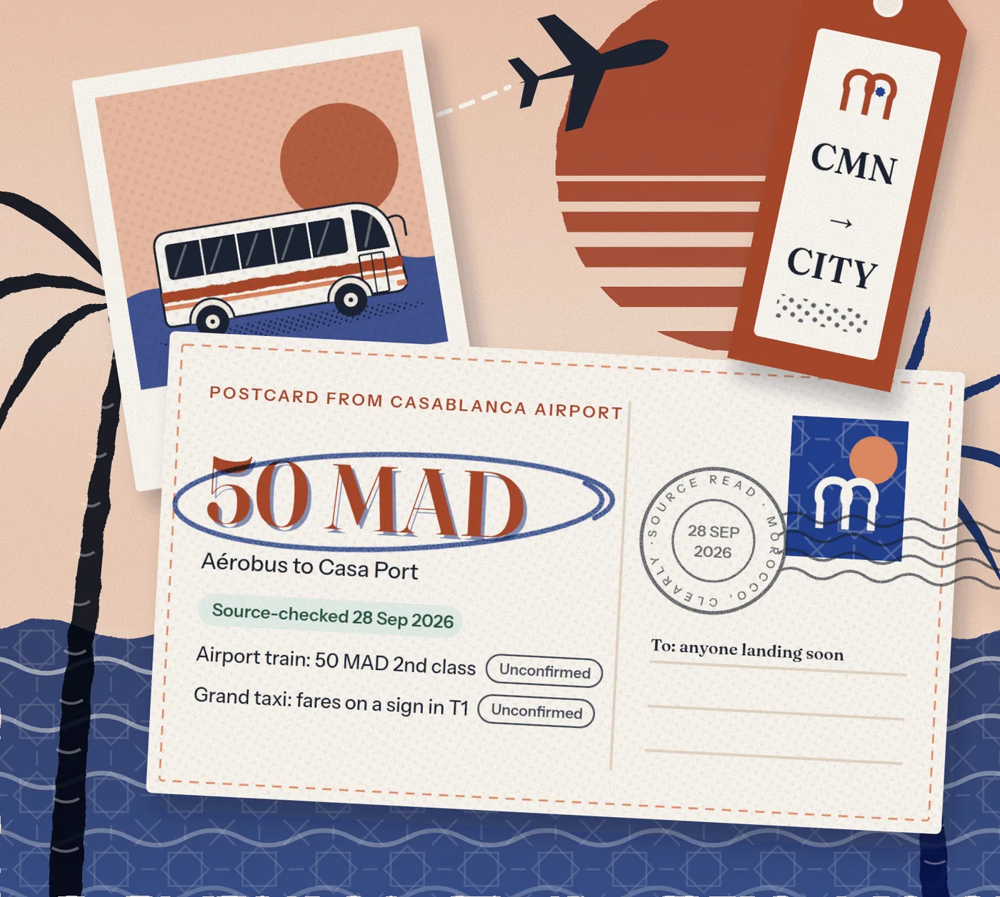

More wonder.
Fewer unknowns.
Real prices and practical steps for your Morocco trip, each one dated and linked to its source.
Free guides & tools · No account needed · Starting with Casablanca and Marrakech

Pick what you need.


Arriving in
Casablanca
One sample train, 28 September 2026. Each figure shows its own status; tap Sources to see where it comes from.
What are you
figuring out?
Whether you are making your first plan or checking the final details, start with the decision in front of you.
 01 / BEFORE THE TRIP
01 / BEFORE THE TRIPMy first visit
Build a manageable plan around what matters to you.
Start planning → 02 / BEFORE YOU BOOK
02 / BEFORE YOU BOOKComparing offers
Put the price, inclusions and unanswered questions side by side.
Compare my options → 03 / MONEY
03 / MONEYUnderstanding costs
Check the whole price, including the extras.
Compare quote totals → 04 / ARRIVING SOON
04 / ARRIVING SOONThe first few hours
Prepare your pickup, connection and route to the door.
Prepare my arrival →One question.
One dated answer.
Every postcard shows a real figure from our facts, its status and the day we read the source. Share them freely.
Every figure wears
its label.
We read it on the operator’s or authority’s own page, on that date.
A source reports it, but we have not yet confirmed it with the operator.
Sources give different answers. We show both and say which is newer.
Seen in person on a stated date. Our first field mornings are in October.
Two offers.
What’s the difference?
A lower headline price can leave important questions unanswered. Use our guided worksheet to compare tour terms, calculate group totals and prepare a message to the operator.
Available now: a browser-based worksheet. AI interpretation of pasted offers is still in development.
Compare two tour offers →A better next question
“Which meals are included, and what additional costs should our group expect?”
Compare what is written. Confirm what is missing.
Useful before
you leave.
 DOCUMENTS
DOCUMENTSEntry requirements
Find the entry checks that apply to your documents and trip.
Read the guide →YOUR FIRST JOURNEYArrival & transport
Agree the meeting point, total price and final route.
Read the guide →MONEYPrices & budgeting
Understand quoted costs before committing.
Read the guide → STAY CONNECTED
STAY CONNECTEDPhone & data
Check compatibility, activation and plan terms.
Read the guide → EVERYDAY INTERACTIONS
EVERYDAY INTERACTIONSEtiquette
Ask thoughtfully and make expectations clear.
Read the guide →TRAVEL PREPARATIONSafety guidance
Use current advice and prepare for your own itinerary.
Read the guide → OUR FIRST DESTINATION GUIDE
OUR FIRST DESTINATION GUIDELess rushing.
More discovering.
Start with a base that suits your pace. Our Marrakech guide helps you think through access, surroundings and what to ask your accommodation.
Explore destinations →The total matters.
So do the terms.
Check the currency, group size, inclusions and extra charges. Our calculator uses your numbers; it does not certify a fair market price.
Clarity includes
knowing the limits.
Follow the source
We distinguish preparation advice from sourced facts and link to primary sources where it matters.
See what is unconfirmed
We do not claim local field checks, verified providers or neighborhood safety scores.
Keep your choice yours
This edition has no paid rankings or booking commissions. Tools are free to use.
Arriving soon? Start here.
Work through the essentials, then print your checklist. No email signup.
Sources for this page
Every fact on this page shows when it was checked and links here to its source. What the badges mean.
- Casablanca Aérobus: Casabus, Casablanca airport (ONDA), maroc.ma, government portal. Reviewed 28 Sep 2026.
- Casatramway / Casabusway fares: Casa Tramway. Reviewed 28 Sep 2026.
- Casa Voyageurs to Marrakech dated timetable sample: ONCF. Reviewed 28 Sep 2026.
- Casablanca airport rail access: ONDA. Reviewed 28 Sep 2026.